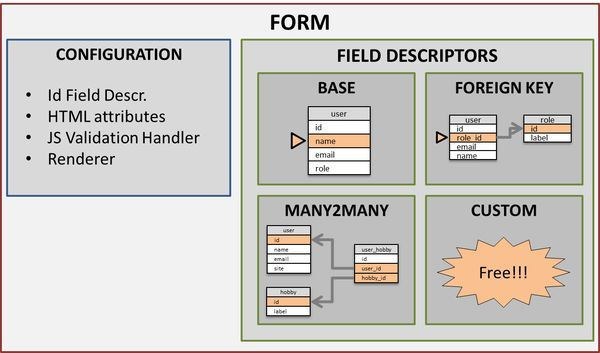
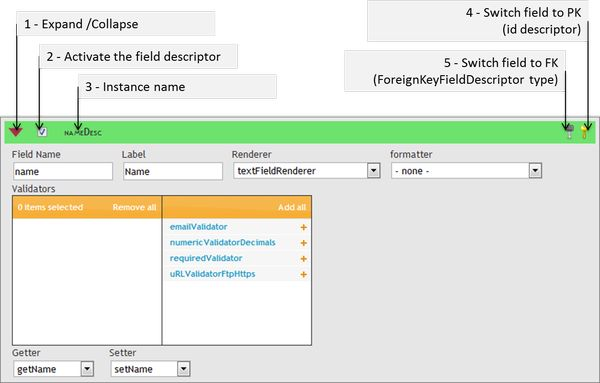
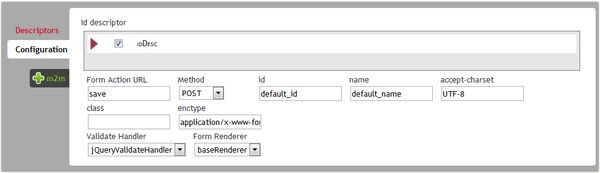

Detailed presentation an configuration of BCE
We will start over from the last step of the "quickstart" presentation, and see how to get a nice userForm. But before you need to get a quick description of BCEForm's structure, and the main objects that it contains.
Detailed description
Structure

-
BCE Form
Reflexcts the root structure of a form: it embedds two categories of objects/values: the field descriptors and the rest that is mainely the configuration part of the form. As you will see just after, FieldDescriptor are responsible for handeling a field of the edited Bean (a User in this case). The configuration part defines how the form should behave (rendering, attributes as POST/GET method, action, id, etc...), and is also includes one special Field Descriptor: the idFieldDescriptor that handled the "identifier" field that has special rules.
- The FieldDescriptors
These insctances describe how a field should be loaded, displayed, validated and persited. Depending on the field's data, and relations, there may be different Types of Field Descriptors:
- Base Field Descriptor
This type is made for handdling simple fields of a table, that are written directly into the table without any relationship. In our example (as defined in the quickstart) this corresponds to user's name, email, birtdate, etc...
- ForiegnKey Field Descriptor
As the name tells it, this type is dedicated for handling One to many relationships, as our user's role_id Foreign Key.
- ManyToMany Field Descriptor
This third type of decsriptor handles, of course, many-to-many relations, as our user's hobbies
- Custom Field Descriptor
Because there is always some specific needs that need to be implemented, you may code any Field Descriptor you want by implementing the BCEFieldDescriptor Interface.
- The Configuration
- Id Field Decriptor
This is a base descriptor that handles the identifier of the table. It is automatically detected if the PrimaryKey is defined for this table, and it is obviously required for the Form to work properly
- HTML attributes
The list of attributes to be found in the Form Tag (id, name, action, method, enctype, etc...)
- JS Validation Handler
The JS library that will handle the client side validation : the validation functions are embedded in the validators, but the JS validation handler is responsible for aggregating the scripts, and diplaying the messages.
- Renderer
Instance that will import the CSS files, and build the Form's DOM, by taking the Form as input.
The configuration interface
Global Overview

The Field Descriptor widget

The widget is composed of a title bar that allows to sort, and expand/collapse the detailed view of the descriptor.
- For confort, only one detail panel will be shown at once.
- The "Activate checkbox" will define if the fieldDescriptor should be added to the form. If the field descriptor is a suggested one (in green), then it will be created.
- The Title bar shows the name of the field descriptor instance.
- The "switch to PK" button is shown whenever no id field descriptor is set nore has been suggested (may occure for example if no PK is defined for the table, and if the form is being created). It will switch any base field descriptor into the configuration tab, as the id descriptor for the form. This action can be undone, when the button is clicked, it becomes an unset PK button.
- The switch to FK button will transform a base field descriptor widget into a ForeignKeyFieldDescriptor widget. This action can be undone as the swicth PK one
Configuration
There is a second tab called "configuration", that allows you to define the specific Id FieldDescriptor, and some other form related attributes (renderer to be used, id, name, action, etc...)
